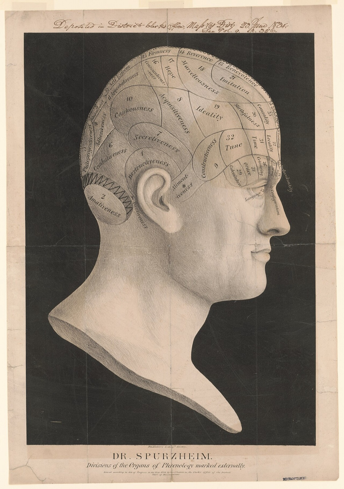
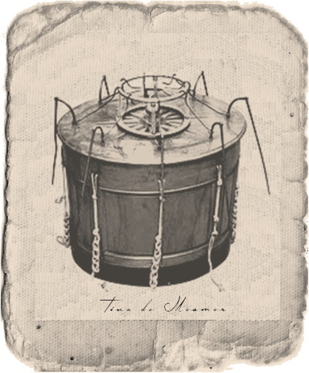
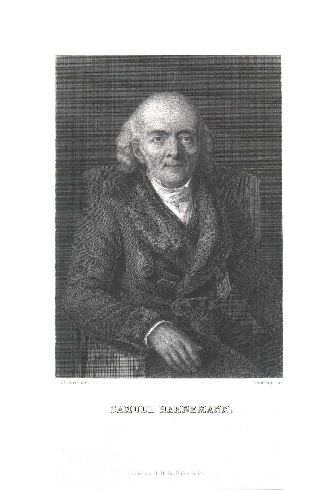

“The art of medicine consists of amusing the patient while nature cures the disease.”attributed to Voltaire
In the summer of 1784, in a townhouse in Paris, a Royal Commission of nine men sat around a tree in a garden. The tree had been “magnetised” that morning by a Viennese physician called Franz Anton Mesmer, the most successful and the most controversial doctor of the age. A patient stood in the garden, blindfolded; she had been told that one of the trees in the orchard was the magnetised one and that, on approaching it, she would feel the great healing crisis Mesmer’s treatments routinely produced. She walked toward the first tree, felt the rising current, swooned and fell. The commission noted the result. The tree she had collapsed beneath was not the magnetised one. None of the trees were. The commissioners had not actually magnetised any tree in the garden. There was no “magnetic fluid.” The patient’s body had nevertheless produced a perfect mesmeric crisis, on schedule, against the bark of an entirely ordinary lime.1
The commission’s composition was extraordinary. It was chaired by Benjamin Franklin, then American Minister to France and the most famous experimenter of the age. It included the chemist Antoine Lavoisier, who would shortly publish the modern theory of combustion; the astronomer Jean-Sylvain Bailly; the physician Joseph-Ignace Guillotin. They had been appointed by King Louis XVI to determine whether Mesmer’s wildly popular treatments — in which patients gathered around a wooden tub (the baquet) filled with magnetised water and iron filings, gripped its emerging rods, and underwent dramatic convulsive “crises” from which they emerged claiming to be healed of long-standing illness — were what Mesmer claimed: a real medical effect of a hitherto-undiscovered universal fluid he called animal magnetism.
The Franklin commission’s answer, delivered in its report in August 1784, was unambiguous and is now considered the first modern clinical trial. The treatments worked — patients really did experience real symptomatic improvement. The mechanism Mesmer claimed did not exist. What was producing the effect was the patient’s own expectation, suggestion from the operator, and the heightened group atmosphere of the treatment room. When these were experimentally separated from the supposed magnetism — by blindfolding the patient, by magnetising the wrong cup, by having the operator stand silent — the cures stopped happening. When they were reintroduced without any magnetism at all — an unmagnetised tree, an unmagnetised cup — the cures returned in full force. The report concluded, in its now-famous line, that the effects of animal magnetism were “the effects of imagination.”2
The Franklin commission’s discovery of 1784 is the discovery this whole chapter is about, because in some form or other it has been repeated, every time, in every careful test of every pseudo-medical theory that has ever been investigated. Whenever the apparent effect of a pseudoscience treatment has been tested under conditions that separate the proposed mechanism from the patient’s expectation, the proposed mechanism vanishes and the expectation remains. The implication is not that the patients are fakes — they are not — nor that the practitioners are necessarily cynical, which most of them are not. The implication is that we have already discovered, ten times over, the actual mechanism that makes every one of these treatments feel like it works: the patient’s own body, responding to the conditions of belief.
That mechanism has a name, and you have read it in every section of every chapter of this volume that touches on healing. It is the placebo. The pseudoscience museum, properly understood, is the museum of theories that mistook the placebo for their own proprietary mechanism.
Whenever the apparent effect of a pseudoscience treatment has been tested under conditions that separate the proposed mechanism from the patient’s expectation, the proposed mechanism vanishes and the expectation remains.
Exhibit OneMesmerism and the First Clinical Trial

Mesmer himself is worth understanding clearly, because he was not the cartoon mountebank the textbooks sometimes make him. He was a medical graduate of the University of Vienna who had defended a doctoral thesis on the influence of the planets on the human body; he had moved to Paris in 1778 in some scandal, set up a fashionable clinic, and within a few years was treating up to four hundred patients a week, including members of the royal court. His patients reported, in many cases, genuine improvement in chronic conditions for which contemporary medicine had nothing to offer. The crises — convulsive episodes lasting from minutes to hours, with weeping, laughter, paralysis, recovery — were real bodily events, not stagecraft. What Mesmer’s theory was wrong about was the cause.
The Franklin commission’s elegance lay in its experimental design. They isolated the variables one by one. Did the magnetism need the operator’s presence? Magnetise a cup, leave the room, have the patient drink it: nothing. Did it need the patient’s belief? Magnetise the cup, tell the patient it was unmagnetised, let them drink: nothing. Did it need the rituals at all? Tell the patient an unmagnetised cup was magnetised, let them drink: the full crisis. By a sequence of separations of which any modern clinical-trial methodologist would approve, the commission demonstrated that the active ingredient of mesmerism was not the magnetic fluid, the rods, the tub, the lighting, or the operator’s hands. The active ingredient was, in their precise word, imagination.
What the commission did not yet have was the modern vocabulary — expectation, suggestion, conditioning, placebo — that would later make the same finding into a recognisable scientific story. But the conceptual move was complete. By August 1784, it was on the public record that a successful new medical theory could be entirely the operation of the patient’s own mind on their own body, with no proprietary mechanism left when the expectation was subtracted. The pseudoscience museum opens with Mesmer because every later exhibit recapitulates the same finding.3
Exhibit TwoPhrenology and the Wrong Map
The phrenology our frontispiece exhibits was the work of a Viennese anatomist named Franz Joseph Gall and his collaborator Johann Spurzheim, beginning around 1796. Gall was, paradoxically, both a careful working scientist and the founder of one of the great pseudosciences. His starting observation was correct: that different mental functions are localised in different regions of the brain, and that the brain is not, as the medical orthodoxy of his time taught, a homogeneous mass. We now know he was right about that. The localisation of language to Broca’s and Wernicke’s areas, the visual cortex to the occipital lobe, the motor cortex to its strip across the frontal lobes — the whole modern map of the brain rests on Gall’s opening intuition. He has been treated, on this account, more kindly by modern neuroscience than the surrounding theology and ridicule of his contemporaries warranted.4
His error was a particular method of reading the localisation. The brain, Gall reasoned, must be shaped by the relative size of its organs; the skull, growing around the brain, must take the shape of the brain; therefore the skull’s contours can be palpated, and from them the relative strength of each underlying mental faculty can be inferred. He proposed twenty-seven such organs in his original system, with names like combativeness, amativeness, secretiveness, benevolence, hope, mirthfulness, and the love of offspring. Patients sat for a phrenological reading the way they would sit for a horoscope. The diagnosis was read off the bumps and depressions of the skull.
The whole edifice was wrong. The skull is not, in fact, shaped by the contours of underlying brain mass; it is shaped by skull-bone development under its own genetic and mechanical pressures. The faculties Gall named, even where they correspond to something the modern brain genuinely does, are not localised in the regions Gall placed them. The professional phrenologist of 1845 was reading a real skull with the wrong map. And yet his patients regularly reported that the readings were true of them, which they then read as confirmation of the system. The mechanism is the one we treated at full length in Chapter Six: the Forer effect, applied here to faculty-by-faculty descriptions, on a willing client, by a sincere practitioner.5
What is worth saluting about Gall, while honestly describing the failure, is the sense in which he was solving the right problem with the wrong instrument. The brain is modular. The localisation of function is a real and important fact. Phrenology was a hypothesis that mapped the right intuition with the wrong technique, and its failure does not retroactively reduce Gall’s starting question to nonsense. It reduces his answer to nonsense; the question survived to be answered, more carefully, by Broca and Wernicke and the entire structure of modern cognitive neuroscience.
Exhibit ThreeHomeopathy and the Vanishing Molecule

Homeopathy is the work of a single careful nineteenth-century physician, Samuel Hahnemann, whose contribution to medicine is both more and less than the contemporary debate generally allows. Hahnemann had been a working German doctor in the late eighteenth century, when standard treatment included bloodletting, purging with mercury, and the heroic doses of crude opium and antimony that may, on the historical record, have killed more patients than they helped. His reform was, in its negative half, almost wholly correct: he stopped poisoning his patients with the standard pharmacopoeia, and instead recommended hygiene, fresh air, sensible diet, and time. His patients, freed from the standard treatments of 1810, did markedly better than the patients of his more conventional colleagues. This is a genuine and lasting medical contribution.6
Hahnemann’s positive half — the actual homeopathy — rested on two laws. The first was similia similibus curentur, “like cures like”: a substance that produces a symptom in a healthy person can, given to a sick person with that symptom, cure them. The second was the law of infinitesimals: the more dilute the dose, the more powerful its effect. Hahnemann recommended dilutions of staggering magnitude — serial dilutions of one part in a hundred, repeated thirty times. The standard homeopathic remedy at “30C” potency contains the original substance at a dilution of 10−60, which is to say: there is, on the mathematics of the dilution alone, less than a one-in-a-billion-billion-billion-billion chance that a single molecule of the supposed active substance remains in the bottle you have purchased.
This is not a quibble. It is the central claim. The remedy you take is, on its own theory, supposed to work because the diluent (water, alcohol, lactose sugar pills) has “memory” of the original substance after the molecule itself is gone. No physical mechanism for this water-memory has ever been demonstrated, and none of the structures of water chemistry as we now understand it would allow it. When the Cochrane Collaboration — the gold standard of medical meta-analysis — has reviewed homeopathic treatment of any specific condition, it has consistently reported no effect beyond placebo. The Australian National Health and Medical Research Council’s 2015 comprehensive review found the same.7
And yet homeopathy is a multi-billion-dollar global industry, with substantial state support in several European countries and India, with millions of regular users, and with a long roster of users who report, in good faith, sustained therapeutic benefit. The mechanism of the benefit is the same as in every other entry in this museum. The careful homeopath spends thirty to ninety minutes with each patient on the first consultation, asks detailed questions about the texture of the patient’s suffering, and supplies a personalised remedy in a setting of caring authority. The mainstream physician sees the patient for seven minutes, types into a screen, and writes a script. The homeopath’s pill contains nothing, in any chemical sense. The mainstream doctor’s pill contains, in many cases, exactly what the patient needed. The patient leaves both encounters subjectively transformed by the first and clinically improved by both.
What this tells us, and we will return to it, is that most of the work of healing in the modern medical encounter is being done by the encounter, not by the chemistry. Mainstream medicine is in many respects the rarer chemistry plus the briefer encounter. Homeopathy is the better encounter plus no chemistry. Both work, in their measurable subjective domains, for similar reasons. Both fail, equally and identically, where chemistry was the only thing that could have helped.
Exhibit FourEnergy Healing, and the Nine-Year-Old’s Experiment
The last great category in our museum is the family of treatments that propose a non-medical energy — prana, qi, the “Universal Life Force” of reiki, the “human energy field” of therapeutic touch — that the practitioner can sense, manipulate, and channel for therapeutic effect. Variants of this view are old; the modern Western forms grew through the twentieth century, with reiki imported from Japan in the 1930s and therapeutic touch developed in American nursing schools from the 1970s.
The cleanest single test of the central claim was performed in 1996 by a fourth-grader from Loveland, Colorado, named Emily Rosa, then nine years old, as her science-fair project. She invited twenty-one therapeutic-touch practitioners — people who claimed, with full sincerity, to be able to sense the “human energy field” emanating from a patient’s body — and asked them to participate in a simple test. The practitioner sat at a table with a screen between them and Rosa. They placed their hands, palms up, through two holes in the screen. Rosa flipped a coin to determine which hand to test. She held her own hand a few inches above the chosen practitioner hand. She asked the practitioner to report which of their hands she was hovering over.
The practitioners had stated, before the test, that they expected to be right at least three quarters of the time. Chance alone would yield half right. In 280 trials across the twenty-one practitioners, the group’s correct-detection rate was 44 per cent — very slightly worse than chance, and statistically indistinguishable from random guessing. Emily Rosa wrote up her result with her parents and a colleague and submitted it to the Journal of the American Medical Association. It was published in 1998, and remains the youngest first-authored study in the history of that journal. It also remains one of the cleanest experimental refutations of the entire claim that practitioners can sense an energy field that no instrument has ever detected.8
This did not stop therapeutic-touch practice in American hospitals, which continued in many institutions for years and continues in some. It did not stop reiki, which has if anything grown in popularity. What the Rosa experiment did was add another, and especially elegant, exhibit to the museum: the central observable claim of the practice, tested under conditions where suggestion could not produce the effect, dissolved exactly as the Franklin commission’s magnetism had two centuries before.
The Real MechanismThe Placebo, the Honest Star of the Museum
What is the placebo, properly? It is not, as the sloppy use of the word suggests, “nothing.” The placebo effect is the well-documented phenomenon by which a treatment with no specific pharmacological action against a patient’s condition nevertheless produces measurable improvement in the patient’s symptoms — sometimes substantial improvement — through the patient’s expectation of relief, the conditioning effect of prior medical experiences, and the therapeutic encounter itself. The improvement is real. It is measurable on standard clinical instruments. It involves real neurobiological mechanisms — endogenous opioid release for pain conditions, dopaminergic activity for movement disorders, immune modulation for some inflammatory conditions. It works, often dramatically, for pain, anxiety, depression, irritable bowel syndrome, allergies, asthma, Parkinsonian symptoms, and a great deal else.9
The honest size of the effect varies by condition. In the careful meta-analyses of the last twenty years, placebo response in clinical trials for pain conditions is, by common estimates, on the order of 30 to 50 per cent — meaning that of every hundred patients given a sugar pill in a randomised trial for pain, thirty to fifty report clinically meaningful improvement. In trials for depression, the placebo response is so large that some careful analysts argue that a substantial portion of the effect of standard antidepressants is the placebo effect operating through the medication. The placebo response in pure surgical conditions — the famous sham-surgery trials for arthritic knee, vertebroplasty, and cardiac procedures — has, in several large studies, been indistinguishable from the response to real surgery, producing one of the most uncomfortable findings in modern medicine.10
The placebo, then, is not pseudoscience’s excuse. It is its actual mechanism. Every successful pseudoscience treatment is, on careful test, a different cultural wrapping of the placebo. Mesmer’s magnetised tree, the phrenologist’s skull palpation, the homeopath’s vanishingly dilute pellet, the reiki practitioner’s hands held an inch above the body — each is a different theatre by which the patient’s expectation of relief is mobilised. And the patient’s expectation, mobilised, can produce real bodily changes that the patient experiences as healing.
The placebo’s dark twin is the nocebo — the same mechanism running in the opposite direction. Patients told a treatment will produce side effects often experience those side effects from an inert pill. Patients in cultures with strong beliefs in curses who become convinced they have been cursed sometimes sicken and die, with no detectable physiological cause. Voodoo death is real; it is not what voodoo says it is, but it is real. The mind that can mobilise its own healing can also mobilise its own harm, and the harm is, on the data, comparably large.11
The Objection That Matters“If the Placebo Works, What’s Wrong With Pseudoscience?”
This is, finally, the question. If a homeopathic pellet provides genuine relief for a patient’s irritable bowel syndrome, through the placebo mechanism, why is that worse than the equivalent pharmacological treatment? If the reiki session leaves the patient calmer and in less pain, why deprecate it? The patient gets better. The cost is lower than many prescription drugs. There are no chemical side effects. What, exactly, is the complaint?
The honest answer has three parts, and we must keep them distinct.
The first is that where the condition is responsive to placebo, the complaint against well-intentioned pseudoscience is largely procedural, not substantive. For chronic pain, mild anxiety, mild depression, irritable bowel, tension headaches, and a great many other conditions in which the placebo response is robust, a careful and caring practitioner producing reliable subjective benefit at low cost is doing genuine good. Many homeopaths, reiki masters, energy healers, acupuncturists, and other practitioners of demonstrably placebo-mediated arts have, on the careful record, produced more felt benefit for more chronic patients than mainstream medicine has often managed. To deny this is to be inaccurate. We can disapprove of their stated theory and still register that their work has helped people who were not being helped elsewhere.
The second is that where the condition is not responsive to placebo, the cost of substitution can be enormous and can be measured in deaths. Cancer does not respond to the strength of the patient’s expectation. Bacterial sepsis does not. Acute myocardial infarction does not. Type 1 diabetes does not. When patients with these conditions are encouraged, by themselves or by their practitioners, to substitute placebo-mediated treatments for the chemistry that would have actually saved them, they die. The most carefully documented body of such deaths is in cancer patients who delay chemotherapy or radiation in favour of alternative regimens; observational studies show their five-year survival is significantly worse than that of patients who pursue conventional treatment alongside. Steve Jobs is a case visible to almost everyone reading this; the case of his nine-month delay between his pancreatic cancer diagnosis and his eventual conventional treatment, in favour of a fruitarian diet and other alternative measures, is the version of the pattern that became famous. Many less famous cases happen each year.12
The third is the ethical question of deception. The placebo, on the most-studied form of its operation, requires the patient’s belief that the treatment is doing more than it is. Whether a sincere homeopath who believes their remedy contains the spiritual essence of the diluted substance is “deceiving” the patient depends on what we count as deception. But even where the practitioner is sincere, the patient is, in the technical sense, mistaken about the mechanism by which they are being helped. Some bioethicists argue that this is a manageable cost; others, that informed consent requires that the patient know what is and is not in the bottle. Recent work on “honest placebos” — placebos given openly and labelled as such — has shown, remarkably, that some of the effect persists even when the patient is told the pill is inert. This is an ongoing and important conversation in the medical ethics literature.13
The clean conclusion, then, is that the museum’s exhibits are not all the same kind of thing. Pseudoscience used on placebo-responsive conditions, by caring practitioners, with no displacement of necessary chemistry, is doing real if mistakenly-framed good. Pseudoscience used on conditions where actual chemistry is the only thing that could save the patient, with displacement of that chemistry, kills. The conscientious reader has to distinguish the cases, and the conscientious practitioner has to know which side of the line they are working.
Most of the work of healing in the modern medical encounter is being done by the encounter, not by the chemistry. The shame is that mainstream medicine has so steadily reduced the encounter to the chemistry, leaving the placebo’s work for the homeopath to do better.
Why the Museum Has So Many VisitorsWhat the Pseudosciences Are Really Selling
It is tempting to treat the persistence of pseudo-medical practice in the twenty-first century as a failure of public scientific literacy. The careful look says something more uncomfortable. The pseudosciences persist because they reliably deliver three things that the modern mainstream medical encounter, by structural design, does not.
The first is time. The average appointment with a general practitioner in many Western health systems is between seven and fifteen minutes. The average first appointment with a homeopath is sixty to ninety minutes. A patient who has been suffering for a year with an unexplained chronic condition finally being listened to for ninety minutes is having a different experience from the same patient being processed in seven, regardless of what is in the bottle they go home with.
The second is narrative. The pseudoscience supplies a story about why the patient is suffering and what can be done about it. The story may be biologically wrong — blocked qi, an excess of melancholic humour, a contamination of the energy field — but it is coherent, vivid, and personal, and it makes the patient’s experience legible. A diagnosis of “unexplained chronic fatigue” from a hurried GP supplies almost nothing of this. The cost of having no story for one’s own suffering is genuinely high.
The third is agency. The pseudoscience patient is, characteristically, doing something. Taking remedies, attending sessions, observing food rules, following the discipline. The mainstream patient with a chronic condition is often told that there is nothing more to be done, or given a single prescription whose effects are slow. Doing something is not nothing, even when the thing being done is the placebo’s wrapping. The agency itself has measurable effects on outcome and on quality of life.
The honest implication of this analysis is that the mainstream medical encounter has, in many systems, become so impoverished — in time, in narrative, in support of patient agency — that the pseudosciences have, by default, become the place where these necessary parts of healing happen. The work of slowly returning these elements to mainstream practice — through patient advocacy, through reforms in primary-care payment structures, through honest acknowledgement of the placebo’s real contribution — is one of the more important pieces of work the conscientious medicine of our century has in front of it. The aim is not to discredit the museum’s practices. It is to give the mainstream medical encounter back the dimensions that the museum has, by default, been doing for it.
“If they all reduce to placebo, why are they still here?”
Two centuries of refutation have not closed the museum. Six who have asked why.
“Every careful study tells the same story. The Franklin commission is its first chapter; Emily Rosa’s ninth-grade project is one of its most recent. The methodology has been the same for two hundred and forty years: control for expectation, and the proposed mechanism disappears. The replication is so consistent that I have stopped finding it interesting and started finding it tragic.”
“In my practice I have stopped treating the question of which alternative practice my patient uses as if it were the central issue. The question I ask is: is this practice replacing something the chemistry could have done? If the patient is taking acupuncture for chronic back pain and getting relief, I bless it. If they are taking a homeopathic remedy in place of insulin for type 1 diabetes, I intervene. The distinction is the practice of clinical responsibility.”
“Every culture in the historical record has produced practitioners who heal partly by listening, partly by ritual, partly by their authority and the patient’s trust. We have called them shaman, priest, doctor. The placebo is the modern Western word for the active ingredient of this universal practice. To pretend mainstream medicine is not also relying on it is naïve. To pretend pseudo-medicine is not also relying on it is the same naïveté in the other direction.”
“If the placebo works, the practitioner faces a tension. If they tell the patient the truth (‘the remedy is biochemically inert’), they may diminish the effect. If they don’t, they are operating against informed consent. The open-label placebo studies suggest the tension is smaller than we feared; some of the effect survives full disclosure. We may be able to have the benefit without the deception. The work is to find out.”
“Be careful with the warm generosity. Some homeopathic and naturopathic practitioners are sincere; some are predatory. Distinguish the categories. The placebo defence does not extend to those who tell terminal cancer patients to abandon chemotherapy in favour of dietary regimens. There is a body count in this museum, and a thoughtful position must acknowledge it.”
“The pseudoscience meets the patient with time, narrative, and agency. Strip these from healing and you are left with what most of modern medicine has become: efficient, accurate, hurried, and lonely. The patient who walks across the road to the homeopath is reaching for something the chemistry cannot supply. They are not stupid. They are well.”
Myth vs. RealitySetting the Record Straight
What Is Often Said (on either side)
From defenders: “Homeopathy, acupuncture, reiki, energy healing — my patient really did get better. That proves there is something real in the treatment beyond placebo.”
From critics: “Anyone who uses these treatments is a fool. They are scientifically refuted; only stupid or uneducated people fall for them.”
What the Evidence Shows
Both overreach. Patients really do get better; that is real and worth honouring. The proposed mechanisms do not exist on any careful test; that is also real and worth saying. The actual mechanism is the placebo, which is a substantial and well-documented neurobiological phenomenon that works through expectation, conditioning, and the therapeutic encounter. The careful position is that pseudoscience used on placebo-responsive conditions, with caring practitioners and no displacement of necessary medical chemistry, is doing real good through a mistakenly-framed mechanism; pseudoscience used in place of chemistry that the condition required, kills.
The lines worth carrying out of this chapter.
- Every pseudo-medical practice that has been carefully tested, for two and a half centuries, has reduced to placebo. The Franklin commission of 1784 set the pattern; Emily Rosa’s 1998 JAMA paper is the same logic in a fourth-grader’s science fair.
- The placebo is not nothing. It is a substantial, well-documented neurobiological phenomenon producing measurable benefit for pain, depression, anxiety, IBS, Parkinsonian symptoms, and a great deal else. The improvements are real.
- Pseudosciences are different cultural wrappings of the same mechanism. Mesmer’s baquet, the phrenologist’s palpation, the homeopath’s pellet, the reiki practitioner’s hands — each is a different theatre by which the patient’s expectation is mobilised.
- The distinction that matters is whether the practice displaces necessary chemistry. On placebo-responsive conditions: largely benign, often more humane than the rushed mainstream encounter. On conditions where chemistry is the only thing that could save the patient: lethal. The clinical responsibility is to know which side of the line you are working.
- The pseudosciences thrive because they deliver three things the modern mainstream encounter often does not — time, narrative, and agency — and the long-term work is to return these to mainstream practice, not to ridicule the patients who reached for them where they found them.
If you keep one sentence: most of what makes a healing encounter work has nothing to do with what is in the bottle, and the museum is the long, patient record of practitioners and patients discovering this together, one wrong theory at a time.
Research ReferencesSources & Notes
- HistoryFranklin, B., Lavoisier, A. et al., Rapport des commissaires chargés par le Roi de l’examen du magnétisme animal (Paris, 1784); Stephen Jay Gould’s essay “The Chain of Reason vs. the Chain of Thumbs,” in Bully for Brontosaurus (1991), is the best brief modern treatment.
- HistoryDarnton, R., Mesmerism and the End of the Enlightenment in France (Harvard, 1968), is the standard scholarly study of the affair.
- ReferencePattie, F. A., Mesmer and Animal Magnetism: A Chapter in the History of Medicine (1994).
- HistoryGall, F. J., contemporary publications (early 19th c.); on the modern reassessment, see Finger, S., Origins of Neuroscience (1994), chapter 5, and Hagner, M., Homo Cerebralis (1997).
- ReferenceVan Wyhe, J., Phrenology and the Origins of Victorian Scientific Naturalism (2004); the standard modern history of phrenology’s rise and fall.
- HistoryHahnemann, S., Organon der rationellen Heilkunde (1810; sixth edition 1843). Standard medical-historical account: Coulter, H. L., Divided Legacy (1973–1994), with the caveat that Coulter is sympathetic to homeopathy.
- ScienceCucherat, M., Haugh, M. C., Gooch, M. & Boissel, J. P., “Evidence of clinical efficacy of homeopathy: A meta-analysis of clinical trials,” European Journal of Clinical Pharmacology (2000); Australian National Health and Medical Research Council, NHMRC Information Paper: Evidence on the effectiveness of homeopathy (2015). Cochrane reviews of homeopathy by indication.
- ScienceRosa, L., Rosa, E., Sarner, L. & Barrett, S., “A close look at therapeutic touch,” Journal of the American Medical Association 279 (1998), 1005–1010.
- ScienceBenedetti, F., Placebo Effects: Understanding the Mechanisms in Health and Disease (Oxford, 2nd ed., 2014) — the standard modern textbook.
- DebatedMoseley, J. B. et al., “A controlled trial of arthroscopic surgery for osteoarthritis of the knee,” New England Journal of Medicine (2002); Kirsch, I., on the placebo response in depression trials — the strongest claims are debated; the underlying effect is robust.
- ScienceCannon, W. B., “Voodoo death,” American Anthropologist (1942); Sternberg, E. M., on the modern neurobiology of nocebo.
- DebatedJohnson, S. B. et al., “Use of alternative medicine for cancer and its impact on survival,” Journal of the National Cancer Institute (2018); Han, E., on patient outcomes in cancer with delay of conventional treatment.
- ScienceKaptchuk, T. J. et al., “Placebos without deception: a randomized controlled trial in irritable bowel syndrome,” PLoS ONE (2010); subsequent open-label placebo work.
Citations support the science and history presented; a production edition would carry full bibliographic detail and externally verified DOIs.
Going FurtherRecommended Books
Read
- Robert Darnton, Mesmerism and the End of the Enlightenment in France (1968)
- Fabrizio Benedetti, Placebo Effects (2014) — the textbook
- Edzard Ernst & Simon Singh, Trick or Treatment (2008) — honest, careful survey
- Anne Harrington, The Cure Within: A History of Mind-Body Medicine (2008)
- John Van Wyhe, Phrenology and the Origins of Victorian Scientific Naturalism (2004)
Watch & Listen
- Talks by Ted Kaptchuk on open-label placebo research
- The Royal Institution lectures on the history of mesmerism
- Documentaries on the Franklin commission and on the 1998 JAMA therapeutic-touch paper